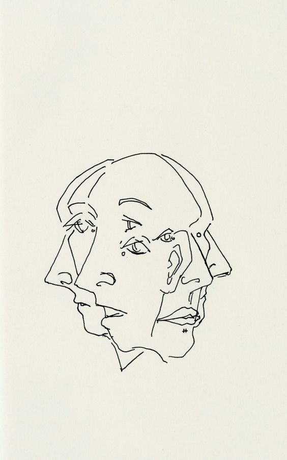

Runtime polymorphism hay còn được gọi là dynamic method dispatch.Ví dụ của đa hình lúc runtime là method overriding (Ghi đè phương thức). Khi class cha tham chiếu đến object của class con, method sẽ được xác định tại runtime. Nghĩa là nếu chúng ta gọi đến method có sẵn ở class cha và được class con định nghĩa lại thì trình biên dịch sẽ gọi method của class con. Hãy xem ví dụ dưới đây:
Tính trừu tượng đề cập đến việc xử lý các ý tưởng hơn là sự kiện. Về cơ bản, nó giải quyết việc ẩn các chi tiết và hiển thị những thứ cần thiết cho người dùng. Vì vậy, bạn có thể nó rằng tính từu tượng trong Java là quá trình ẩn các chi tiết triển khai khỏi người dùng và chỉ lộ chi tiết chức năng cho họ. Có thể đạt được tính trừu tượng theo hai cách: Sử dụng lớp abstract Sử dụng interface
 Đến pin lap11